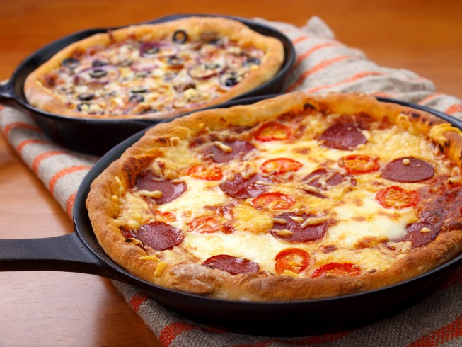

The Pan Pizza
The pan pizza is one, if not of the oldest ways of making pizza, it's origins are debated, thought. One tale that gets around is the story Roman Soldiers making pizza using their shields to put a flat bread with toppings, cheese and olive oil on top. Whether or not this story is true, the pan pizza is one of the oldest ways of making pizza.
And quite easy to do, too!

I made pan pizza as a broke uni student every time my friends came over to study, but without further ado, let's see the recipe!
Primary ingredients
- Store bought dough
- Mozzarella cheese
- Olive oil
- Tomato sauce
Toppings
- Salami
- Parmesan
- Diced mushrooms
- Oregano
Preparation
- First things first, you can't make a good pan pizza without olive oil. So first oil the pan, turn on the heat and leave the pan pre-heating for around 10 minutes.
- Next up, turn the flatbread upside down with the help of a spatula or another pan. Put the tomato sauce, mozzarella, diced mushrooms, salami, oregano and parmesano in this exact order. It's important to add the toppings fast, so you don't lose too much heat on the bread.
- After putting the toppings on top of the cooked flatbread, close the pan with a lid or another pan, in case of an omelet pan. Leave it closed for 10 minutes until fully cooked. Remember to use mozzarella cheese for a chewy experience.
- Lastly turn off the heat and wait for it to cool off, or if you're feeling brave, serve hot, and enjoy your pan made pizza!
Back to the main page